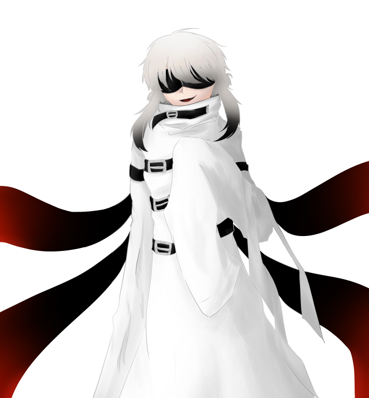

| 쿠키 Cookie |
|
|  | |
| 별칭 | 뱀, 아르고스 |
| 나이 | (외관 상) 23세 |
| 종족 | 크리살리스 |
| Sex / Gender | 여성 / 시스젠더 |
| 키 | 163cm |
| 몸무게 | 평균 +2kg |
| 혈액형 | O형 |
| 생일 | 2월 17일 |
FNI
1. 외형
먹먹한 색의 잿빛 머리카락은 끄트머리로 내려올수록 어두운 색을 띈다. 앞머리는 다듬은지 오래 되었는지, 아랫쪽 콧대를 간질일 정도로
길게 자라나있다. 귀를 가리며 덥수룩하게 자라난 옆 머리는 가슴께까지 닿아온다. 반면 뒷머리는 숏컷과 단발의 애매한 경계 정도의 길이이며,
목덜미 아래가 훤히 드러나 보인다. 부스스한 머리카락이 이리저리로 휘어서 반곱슬처럼 보인다. 여러모로 난잡해보이는 인상을 준다. 눈이
보여야 할 자리에는, 평상시에는 검은 가죽 재질의 안대가 가리고 있다. 안대 안 쪽에는 작은 크리살리스의 문양이 반복되어 새겨져있다. 안대
아래의 눈은 가늘고, 눈꼬리가 위로 잔뜩 휘어있는 모습이다. 눈동자는 꽤나 작은 편이며 자수정을 연상시키는 밝은 보라색이다. 입술이 가늘고,
웃을 때 날카로운 이빨이 틈새로 살짝 드러나보이다. 피부색은 평범하지만, 살이 얇은 편이라 쉽게 붉어진다. 상처 또한 쉽게 나는 편.
실험실에 갇혀있을 때에는 항상 안대와 구속복이 입혀져 있다. 권고사항 상의 복장일 뿐, 심하게 강제되는 것은 아니기 때문에
가끔은 안대를 벗거나 구속복의 벨트를 풀고 돌아다닌다. 외부에서 활동할 때에는 주로 무채색의 후드티에 야구 모자를 쓴다. 의외로 브랜드를 따져서,
신상 보호에 치중한 복장에도 유명 브랜드의 옷을 요구하고는 한다.
전체적으로 뼈대가 가는 20대 여성의 체형. 체중 조절에 신경쓰지 않는 타입이라 군살이 조금 있다. 손목과 발목이 얇은 편.
2. 성격
[ 능글대는 ]
그의 언행에는 언제나 능청스럽고 얍삽한 구석이 있다. 목소리 또한 항상 얄미운 웃음기가 서려있으며, 남들의
신경을 박박 긁는 것을 즐긴다. 사소한 장난이나 가벼운 농담이 시작이지만, 그의 정체가 정체인 만큼 위험한 방법으로 농락하기도 한다. 말려들지 않으려면
최대한 반응을 보이지 않는 것이 좋다. 좋은 반응이 돌아오지 않으면 시무룩해진 얼굴로 관심을 거두어버리고는 한다.
" 내가 재미있는 거 알려줄까? "
[ 어린아이 같은 ]
어린아이 티를 채 벗지 못한 모습이다. 누구보다도 높은 자리에, 누구보다도 주목받는 사람이 되고싶어하며,
유치한 이기심이 가득하다. 만일 자신이 화제의 중심이 되지 못한다면, 자신의 자리를 대신 꿰찬 놈 때문이라 생각하여 끝까지 발목을 잡고
늘어진다. 오직 자신만 생각하며, 진심어린 조언을 해줘도 듣는 척도 하지 않는다.
" 나를 두고 그쪽이랑 놀겠다는 거야~? 진짜로? 나를 두고? "
[ 쉽게 우는 ]
그것도 자신이 세상에서 가장 비참하다고 생각한다. 한없이 어린 마음은 독이 되어 스스로 자존감을
깎아내렸다. 남들과 어울릴 때에는 밝고 산만해보이지만, 혼자 남게 되면 누구보다도 외롭고 두려움에 떨고있는 아이와 같다. 홀로 숨어서 눈물을
닦는 일 역시 자주 있는 일. 이런 날것의 모습을 들키기 싫어하며, 들키게 되면 놀라울 정도로 혼란스러워한다.
" ...... "
3-1. 호불호
파충류를 아주 좋아한다. 도마뱀, 뱀, 거북이, 카멜레온, 악어 등 대부분의 파충류를 좋아하지만, 가장 좋아하는 것은 단연 매끈한 뱀.
유려한 몸의 곡선과 이동하는 방식이 마음에 든다고 한다. 실험실에서 잠깐 도망쳐 나왔을 때, 임시 거처에서 조그만 갈색 뱀을 분양받아 키운 적이
있지만, 금방 이별하게 되었다.
반대로 설치류를 싫어한다. 시궁쥐부터 작은 햄스터나 친칠라 또한 싫어한다. 뒤가 비치지 않는 까만 눈과 툭 튀어나온 이빨이
무섭다고 한다. 덕분에 파충류를 좋아함에도 불구하고 피딩이나 산 먹이에 대한 이야기는 끔찍하게 여긴다. 욕심 많은 그가 굳이 작은 뱀을 키운
이유도 여기에서 찾을 수 있다.
몸에 딱 붙거나 포멀한 의복을 싫어한다. 단순히 몸을 옥죄는 느낌을 싫어하는 것이기도 하고, 격식을 차리는 것에 거부감을 느끼는
것이기도 하다. 크리살리스 회합 때에도 제대로 양복을 차려입지 않는 일이 허다하다. 야샤가 강압에 가까운 경고를 할 때에만 제대로 격식차려 입고는
한다.
3-2. 취미
취미는 능력을 이용하여 다른 사람들에게 말 걸고 다니기. 주로 불우한 삶을 살고 있거나 최근에 갑자기 불행한 일이 닥친 사람들을 찾아간다. 대부분의 경우에는 그를 보고 교류할 수는 있지만 제대로 인지하지는 못한다. 다만 중증 우울증을 앓고 있거나 여타 정신질환을 갖고 있는 사람들은 대화 후 오랜 시간이 지나도 상대적으로 오랫동안 인식할 수 있다. 그와 교류한 대부분의 사람들은 부정적인 방식으로 우울감에서 벗어나게 된다. 덕분에 크리살리스와 재단의 감시로, 압박을 많이 당하고 있다.
3-3. 습관
마음에 들지 않는 일이나 말을 들었을 때, 작게 혀를 낼름거린다. 입술에 침을 묻히는 건가, 메롱 하는 건가 헷갈릴 만큼 소심하게 혀를 내밀고는 눈썹을 가늘게 해 불쾌감을 표시한다. 전체적으로, 말보다 행동으로 더 빠르게 감정이 표출된다. 반대로 기분이 좋을 때에도 웃음기를 잘 숨기지 못하는 편이다.
6. 주변 관계
 문로 - 고용주 중 하나. 얼굴이 취향이라 그나마 잘 따른다.
문로 - 고용주 중 하나. 얼굴이 취향이라 그나마 잘 따른다.
닥터 - 전 정적이자 동족. 무서워하고 있다.
오세나 - 쫓기고 있는 동족.
 야샤 - 고용주이자 뜻을 함께 하는 친구.
야샤 - 고용주이자 뜻을 함께 하는 친구.